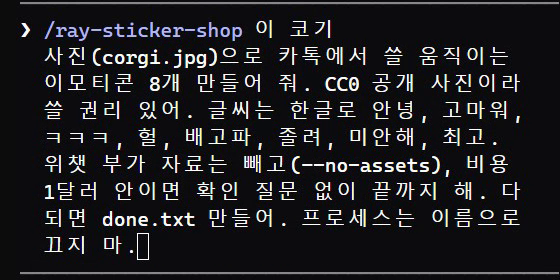
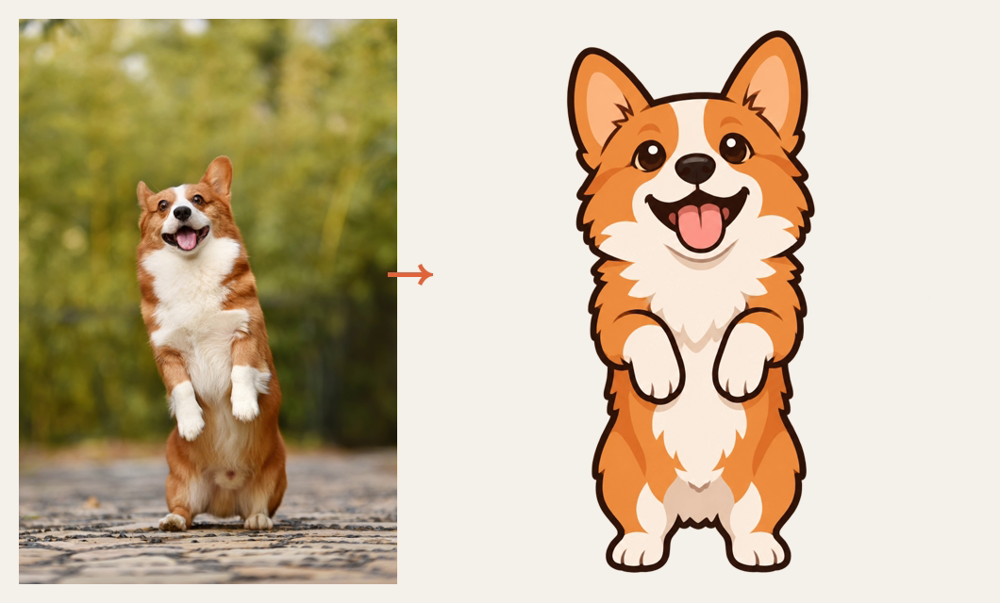
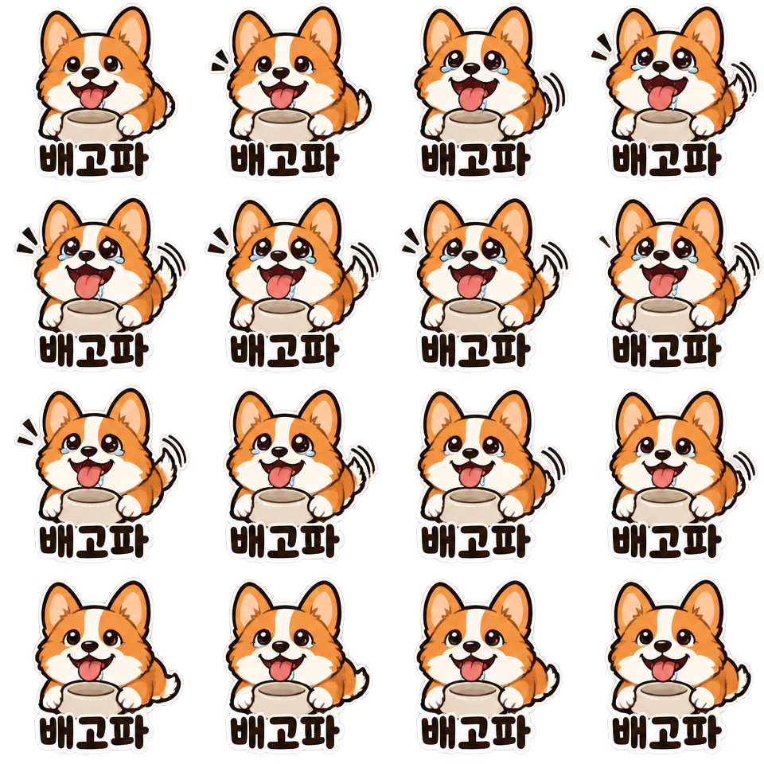
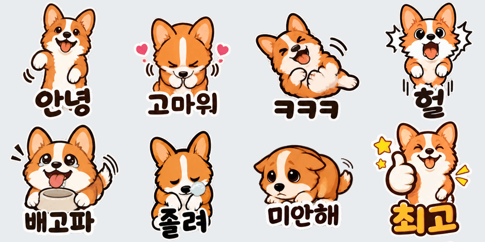

클로드 코드(또는 코덱스)에 붙여 쓰는 무료 오픈소스 스킬(MIT)이에요. 사진이나 내가 그린 캐릭터 한 장을 주면, 같은 얼굴로 움직이는 이모티콘 한 세트(기본 8개)를 240×240 GIF로 만들어 줘요. 아래 화면은 전부 저희가 직접 돌린 거예요(코기 사진 한 장 → 8개, 4분 26초, 그림 값 $0.46).
스킬 폴더에 저장소를 그대로 받아요. 맥·리눅스는 ~/.claude/skills, 윈도우는 사용자 폴더 아래 .claude\skills예요. 아래 '복사해서 쓰기'에 명령이 있어요. 깔고 나서 클로드 코드를 새로 켜면 /ray-sticker-shop이 보여요.
클로드 코드를 켜기 전에 터미널에서 OPENAI_API_KEY를 넣어 둬요(명령은 아래). 키는 채팅창에 붙여 넣지 말고 환경 변수로만.
사진 파일을 작업 폴더에 두고, /ray-sticker-shop 뒤에 '이 사진으로 움직이는 이모티콘 8개, 글씨는 한글로 안녕, 고마워…'처럼 적어요. 자주 쓰는 말 8개를 정해 주면 말마다 다른 동작을 붙여요. 저희는 '비용 1달러 안이면 확인 질문 없이 끝까지'까지 적었어요.

스킬이 먼저 사진을 캐릭터 그림 한 장으로 그려요. 이 그림이 기준이라 8개 내내 얼굴이 같아요. 내가 그린 캐릭터는 이 단계 없이 그대로 기준으로 써요.

이모티콘 하나마다 16칸짜리 그림을 한 장 뽑고, 칸을 차례로 이어 붙여 GIF를 만들어요. 크기는 240×240, 용량은 500KB 안으로 맞춰요.

끝나면 미리보기 화면이 나와요. 글씨가 틀렸거나 모양이 이상한 것만 '3번, 8번 다시 뽑아 줘'라고 하면 그것만 다시 그려요. 저희 실행에선 반복 이음새가 튀는 2개를 클로드가 스스로 앞뒤 프레임을 잘라 다듬었어요.

결과 폴더의 GIF 파일을 메신저에 사진처럼 보내면 움직이는 그림으로 보여요(GIF를 재생하는 메신저 기준). 한 번에 받으려면 묶음 zip 파일을 열면 돼요.
저희 계정 개미 캐릭터 그림 한 장으로 출근·퇴근·화이팅·감사 4개를 만들었어요. 4개는 그림 값 $0.25였어요.
터미널에 붙여 넣기
git clone https://github.com/imraywang/ray-sticker-shop ~/.claude/skills/ray-sticker-shop
PowerShell에 붙여 넣기
git clone https://github.com/imraywang/ray-sticker-shop "$HOME\.claude\skills\ray-sticker-shop"
파이썬 그림 라이브러리
pip install pillow
클로드 코드 켜기 전에, 이 창에서만 유효
$env:OPENAI_API_KEY="여기에_내_키"; $env:PYTHONUTF8="1"; claude
클로드 코드 켜기 전에
export OPENAI_API_KEY="여기에_내_키"; claude
사진을 작업 폴더에 넣고 클로드 코드에
/ray-sticker-shop 이 사진(파일이름.jpg)으로 움직이는 이모티콘 8개 만들어 줘. 내 반려동물 사진이라 쓸 권리 있어. 글씨는 한글로 안녕, 고마워, ㅋㅋㅋ, 헐, 배고파, 졸려, 미안해, 최고. 위챗 부가 자료는 빼고(--no-assets), 비용 1달러 안이면 확인 질문 없이 끝까지 해.
몇 개만 마음에 안 들 때
3번, 8번만 다시 뽑아 줘.
도움이 되셨다면
@ai.antenna.kr
에서 바로 쓰는 AI 활용법을 계속 올립니다.